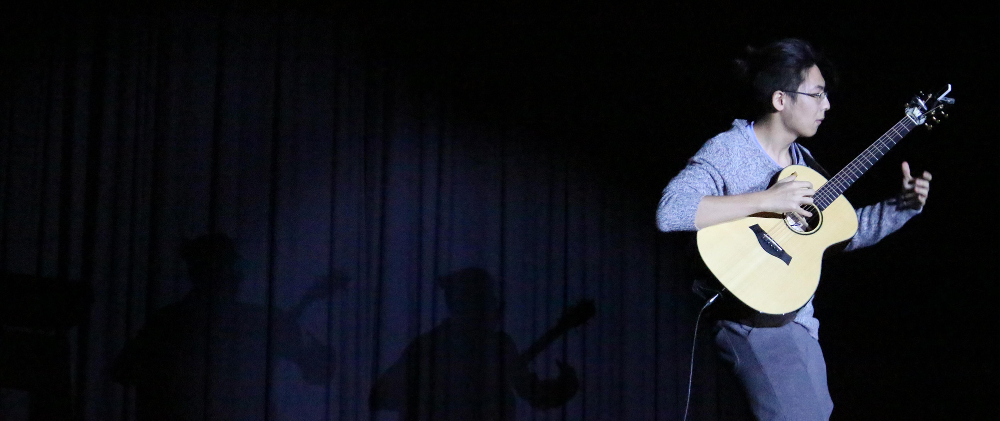

V2_arK
This is a personal website.
This is a personal website.
Photography is one of my greatest passions. It not only gave me another perspective to see things,it also allowed me too share my experiences with other in a different way.
If you are interested to check out some of my work, or have a discussion about photography with me,it's my pleasure!
Be careful of your data usage! Some of the photo are rather large!

I started to know about the fingerstyle guitar genre because of Osamuraisan. And after a few years of practices, I began to make covers of the music I personally enjoys.
If you would like to check out some of my work, you can visit me at:
Please use save as to download the files! Some of the files are too large and exceeds the 50MB limit of github, so they cannot be uploaded.
Please use save as to download the files! The file type will be '.gp', which is supposed to be open with Guitar Pro 7.
These tabs are either arranged or transcribed by me, have fun playing with them, making modifications or cover them.
There is no need to credit me, but I will be very happy if you do so! :)
More will be added
Feel free to contact me or add me on the following platform: